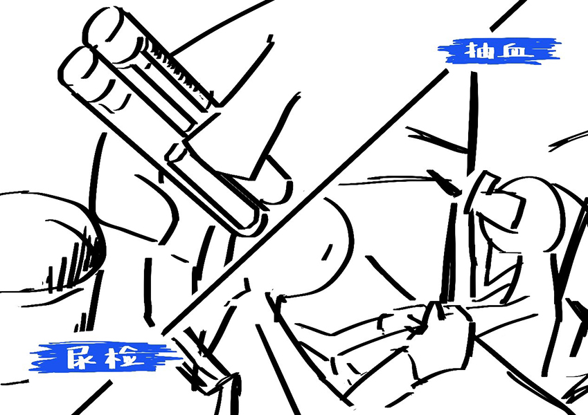
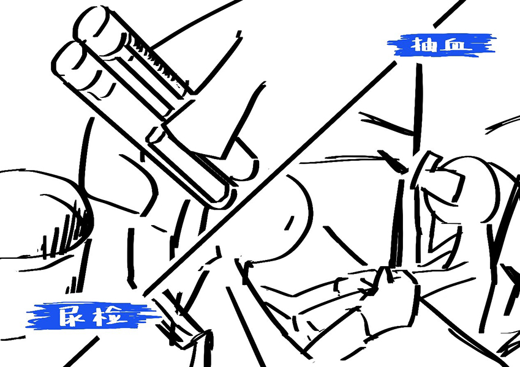

庞大的临床药物试验需求
根据国家药品监督管理局2013-2019年度药品监管统计年报，2013年至2016年新药、仿制药和进口药的临床试验审批数量不断上升，2016年由于政策放开，
临床试验申请较为容易，所以2016年临床试验审批数量暴风增长，而后回归至正常水平。
数据来源：国家药品监督管理局2013-2019年度药品监管统计年报
据不完全统计，全国大约有50万人长期从事试药行业，他们大多数是20-30岁的年轻人。 据2004年的资料显示，中国职业“试药人”基本上由学生、医护人员和社会无职业者组成，其中医护人员与学生是药物一期临床试验的主力军。 随着试药市场的不断发展，这一群体还在不断扩大。
我们爬取了微博平台上2020年6月至12月的10753条试药招募信息。
经过筛重和清洗后留下3058条有效数据，通过数据解读为你展现试药行业现状。
根据国家药品监督管理局2013-2019年度药品监管统计年报，2013年至2016年新药、仿制药和进口药的临床试验审批数量不断上升，2016年由于政策放开，
临床试验申请较为容易，所以2016年临床试验审批数量暴风增长，而后回归至正常水平。
数据来源：国家药品监督管理局2013-2019年度药品监管统计年报
通过提取三千余条数据临床试验点的相关信息我们发现发布招募信息的临床试验点主要分布在东南沿海地区， 招募信息数量排行前五的省份（直辖市/特别行政区/自治区）分别是北京、湖南、江苏、上海、广东。
（鼠标移至地图即可查看该地区招募信息数量以及获批临床试验点数量）
根据《药物临床试验质量管理规范》相关规定，临床试验机构必须具备一定的资质，必须拥有一定数量的研究者，必须设有专门的部门承担临床试验的管理工作， 且科室必须具备承担临床试验的能力、必须配有相应的设备等。通常情况下只有三甲医院和个别医院的某一科室具备临床试验点的资格。
通过对比招募信息在各地区的分布情况与各地区临床试验点数量可以发现，招募信息数量与获批的临床试验点 数量大体上呈正相关关系。其中，广东省、四川省和山东省临床试验点数量相比起其他省份明显较多。
我们将药物按照不同科室的用药分成12类，将无法归类的药物归入其他， 通过对比不同功效的药物的试药报酬发现：内分泌科类药物最低报酬与最高报酬相差最大，最高报酬排行前三的分别是妇科和内分泌科（并列第一）、 风湿免疫科和肿瘤科，平均报酬排行前三的分别是眼科、骨科和风湿免疫科（由于排行第一的烧伤科类药物仅有一条数据，故剔除），按最低报酬升序排列前三分别是神经科、 血管外科和消炎药。 试药报酬与试药风险和住院时长相关，试药风险越大报酬越高，一般已经上市的药物报酬会相对较低；而住院时长较长的项目也会通过提高报酬吸引试药人。
通过进一步的数据收集和深访
我们接触到了更真实的试药人群体
根据所能获取的有限数据，我们对比了试药人日收入（试药人日收入=试药报酬/住院天数）与中国平均日收入 （中国平均日收入=2019年全国人均每日可支配收入）发现在这个公式计算下的试药人每日所得远远超过中国平均水平。
然而，事情真有这么简单吗？
试药前的体检十分严格，能选上的概率极小。且目前试药需联网登记，至少三个月内不得进行第二次试药， 试药人的“空窗期”特别长，用一句老话来形容就是“三月不开单，一单吃三月”。许多试药人踩着三个月的底线奔走在一个又一个城市， 做了一个又一个项目，却还是十分窘迫，这个世界似乎没有给他们带来光明。
那么，这个行业究竟是如何运转的？
 

对于药物临床试验，国家有着相当完善的法律法规
但是社会对于试药普遍不太了解
2020年初，一场肺炎横扫全球，导致无数的悲剧。在这场天灾中，无数的人挺身而出， 有医生护士，有领导官员，有建筑工人，有普通民众……还有一群人，他们被称为新冠疫苗志愿者， 也正是这群人，让试药人这个群体被更多人注意到。
数据来源：知乎 数据分析：集搜客情感分析
我们爬取了知乎上1465条关于“如何看待试药”和“如何看待新冠试药”的有效评论，其中与“如何看待试药”相关的评论共有518条， 与“如何看待新冠试药”相关的评论共有947条。 我们对这些评论做了情感分析后发现当人们评价“试药”时，有27.99%的评论呈现出强烈的积极态度，有20.27%呈现强烈的消极态度。 而当“试药”与“新冠”挂钩时，明显呈现积 极态度的评价达到了38.01%，强烈消极态度的评价降低到15.73%。总体来看，人们普遍对新冠试药人较为宽容。
十六年前，中国已有50万试药人，而如今这个数字究竟是多少还未可知。他们将试药作为“兼职”，游走在城市边缘，维持着自己的体面。 《药物临床试验质量管理规范》第三章中对于伦理委员会成员有这样一项规定：“……伦理委员会应当审查是否存在受试者被强迫、利诱等不正当的影响而参加临床试验。……”而事实上，除了医学生等少量志愿者，大多数试药人都是为钱而来。 他们是谁？他们在哪？他们吞下了什么？他们又注射了什么？这些都无人问津，他们就像游走在一个个城市的透明人。

{kind=link}
{kind=link}